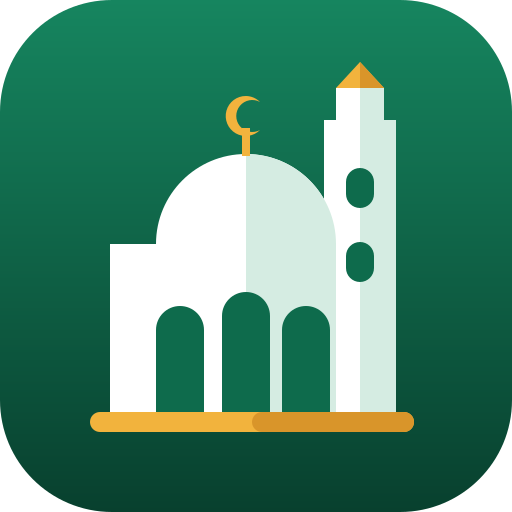

Eau non contrôlée. Les sources, puits et majels ne sont pas analysés : l'eau peut ne pas être potable. Faites-la bouillir ou filtrez-la en cas de doute, et ne la donnez pas aux bébés.ماء غير مراقب. العيون والآبار والمواجل غير محلَّلة: قد لا يكون الماء صالحًا للشرب. اغلِه أو صفّه عند الشك، ولا تعطه للرضّع.Untested water. Springs, wells and majels are not analysed: the water may not be safe to drink. Boil or filter it if in doubt, and do not give it to babies.
Le monde entier est sur la carteالعالم كله على الخريطةThe whole world is on the map
Ailleurs qu'en Tunisie : cherchez une ville, ou touchez un exemple.خارج تونس: ابحث عن مدينة، أو المس مثالًا.Outside Tunisia: search for a town, or tap an example.
Exemples :أمثلة:Examples:
Touchez un point pour l'itinéraire, ou pour dire s'il existe toujours. Pas trouvé ?المس نقطة لمعرفة الطريق، أو لتقول إن كانت ما تزال موجودة. لم تجد؟Tap a point for directions, or to say whether it still exists. Not found? Chercher aussi sur Google Mapsابحث أيضًا في خرائط GoogleAlso search Google Maps.
Les majels de Djerba sur la carte (leur nom, leur état et leurs photos) viennent du recensement de l'association AJEM, projetمواجل جربة على الخريطة (أسماؤها وحالتها وصورها) مأخوذة من إحصاء جمعية AJEM، مشروعThe Djerba majels on the map (their names, condition and photos) come from the survey by the AJEM association, project Fesguietna : merci à eux.: شكرًا لهم. — thank you to them.
Majels et puits en Tunisieالمواجل والآبار في تونسMajels and wells in Tunisia
Comment on construit un majel, les puits et les oasis, et ce qui sert encore aujourd'hui : explications et liens.كيف يُبنى الماجل، الآبار والواحات، وما زال مستعملًا اليوم: شروح وروابط.How a majel is built, wells and oases, and what is still in use today: explanations and links.
→Le Coran et la Sunna sur l'eauالماء في القرآن الكريم والحديث النبويWater in the Quran and Sunnah
« La meilleure aumône : donner à boire » — versets et hadiths sur l'eau.« أفضل الصدقة سقي الماء » — آيات وأحاديث عن الماء.“The best charity is giving water to drink” — verses and hadiths about water.
→Eau en bouteille : comparez les prixالماء المعدني: قارن الأسعارBottled water: compare prices
Sur notre site Prix des Eaux de Tunisie : la stika la moins chère aujourd'hui.على موقعنا «أسعار الماء المعدني في تونس»: أرخص علبة اليوم.On our Tunisia Water Prices site: today's cheapest pack (stika).
→
Les mosquées de Tunisie : carte et histoireمساجد تونس: الخريطة والتاريخMosques of Tunisia: map and history
Toutes les mosquées du pays sur une carte, et l'histoire des grandes mosquées, de Kairouan à la Zitouna.كل مساجد البلاد على خريطة، وتاريخ الجوامع الكبرى من القيروان إلى الزيتونة.All the country's mosques on one map, and the history of the great mosques, from Kairouan to the Zitouna.
→Votre avisرأيك يهمّناYour feedback
Une remarque, une erreur, une idée ? Écrivez-nous : chaque message est lu.ملاحظة، خطأ، فكرة؟ اكتب لنا: كل رسالة تُقرأ.A comment, a mistake, an idea? Write to us: every message is read.